machine_learning_analysis
Machine Learning Analysis
Here we will be performing a machine learning analysis of our proteomics and metabolomics data.
We intend to evaluate several models focusing on 3 comparisons:
- Healthy vs Infected patients
- E.faecalis vs E.faecium infected patients
- Mortality vs Survival.
Our dataset has low n but high p, so we will apply a lasso regression in hopes that this will prevent overfitting of the data.
Loading/Formatting Data
Code
library(dplyr)
Attaching package: 'dplyr'The following objects are masked from 'package:stats':
filter, lagThe following objects are masked from 'package:base':
intersect, setdiff, setequal, unionCode
library(tidymodels)── Attaching packages ────────────────────────────────────── tidymodels 1.2.0 ──✔ broom 1.0.7 ✔ rsample 1.2.1
✔ dials 1.3.0 ✔ tibble 3.2.1
✔ ggplot2 3.5.1 ✔ tidyr 1.3.1
✔ infer 1.0.7 ✔ tune 1.2.1
✔ modeldata 1.4.0 ✔ workflows 1.1.4
✔ parsnip 1.2.1 ✔ workflowsets 1.1.0
✔ purrr 1.0.2 ✔ yardstick 1.3.1
✔ recipes 1.1.0 ── Conflicts ───────────────────────────────────────── tidymodels_conflicts() ──
✖ purrr::discard() masks scales::discard()
✖ dplyr::filter() masks stats::filter()
✖ dplyr::lag() masks stats::lag()
✖ recipes::step() masks stats::step()
• Dig deeper into tidy modeling with R at https://www.tmwr.orgCode
library(caret)Loading required package: lattice
Attaching package: 'caret'The following objects are masked from 'package:yardstick':
precision, recall, sensitivity, specificityThe following object is masked from 'package:purrr':
liftCode
library(broom)
library(readr)
Attaching package: 'readr'The following object is masked from 'package:yardstick':
specThe following object is masked from 'package:scales':
col_factorCode
library(ggplot2)
library(thematic)
ggplot2::theme_set(theme_bw())Code
clinical_metadata <- read_csv("clinical_metadata.csv") Rows: 105 Columns: 75
── Column specification ────────────────────────────────────────────────────────
Delimiter: ","
chr (29): sample_id, patient_id, gender, race, liver_disease, diabetes, soli...
dbl (22): day_of_blood_draw, age, days_in_hosptial, charleson_index, bmi, ba...
lgl (24): death_during_admission, death_at_one_year, history_of_myocardial_i...
ℹ Use `spec()` to retrieve the full column specification for this data.
ℹ Specify the column types or set `show_col_types = FALSE` to quiet this message.Code
# Clinical metadata with only the relevant outcomes
clinical_metadata_o = clinical_metadata %>%
select(sample_id, condition, infection_status,
death_during_admission)
proteomics_data <- read_csv('proteomics_data_cleaned.csv')Rows: 273 Columns: 109
── Column specification ────────────────────────────────────────────────────────
Delimiter: ","
chr (4): orientation, uniprotid, locus, Gene
dbl (105): S1, S3, S2, S5, S4, S7, S6, S9, S8, S11, S10, S13, S12, S15, S14,...
ℹ Use `spec()` to retrieve the full column specification for this data.
ℹ Specify the column types or set `show_col_types = FALSE` to quiet this message.Code
metabolomics_data <- read_csv('metabolomics_data_cleaned.csv')Rows: 2404 Columns: 107
── Column specification ────────────────────────────────────────────────────────
Delimiter: ","
chr (2): row_id, compound_name
dbl (105): S7, S2, S12, S16, S4, S15, S24, S17, S6, S19, S8, S9, S13, S1, S2...
ℹ Use `spec()` to retrieve the full column specification for this data.
ℹ Specify the column types or set `show_col_types = FALSE` to quiet this message.Code
# Transposing proteomics
proteomics_t <- proteomics_data %>%
select(-orientation, -uniprotid, -locus) %>%
pivot_longer(2:length(.),names_to = "sample_id") %>%
pivot_wider(names_from = Gene, values_from = value)
# Transposing metabolomics
metabolomics_t <- metabolomics_data %>%
dplyr::filter(!is.na(compound_name)) %>%
dplyr::mutate(row_id = paste0(row_id,":",compound_name)) %>%
select(-compound_name) %>%
pivot_longer(2:length(.),names_to = "sample_id") %>%
pivot_wider(names_from = row_id, values_from = value)
# Combining proteomics and metabolomics
all_t = dplyr::inner_join(proteomics_t,metabolomics_t,by = "sample_id")Model Function
Here we will define a function to do all the modeling steps. This way for each comparison, we only need to provide the model data and model recipie without repeating everything over and over.
Code
# Defining the model Max built as a function, so we can easily apply it to all
# of our comparisons.
our_model = function(model_data,
outcome,
model_recipe){
# Setting seed at 2 to make reproducible.
set.seed(2)
# Create train/test split
train_test_split <- initial_split(model_data,prop = 0.8,
strata = outcome)
train_data <- training(train_test_split)
test_data <- testing(train_test_split)
# Setting a logistic regression.
log_reg <- logistic_reg(
mixture = 1, # Lasso regression
penalty = tune() # testing a few different penalty values
) %>%
set_engine("glmnet")
# Creating a model workflow
model_workflow <- workflow() %>%
add_recipe(model_recipe) %>%
add_model(log_reg)
# 5 fold cross validation
cv_folds <- vfold_cv(train_data, v = 5)
# Tune the penalty parameter
tune_res <- tune_grid(
model_workflow,
resamples = cv_folds,
grid = 5, # Try 5 values of the penalty
metrics = metric_set(roc_auc, accuracy), # generate performance metrics for roc_auc & accuracy
control = control_grid(save_pred = TRUE)
)
# Show performance metrics and get the best model
best_result <- tune_res %>%
collect_metrics() %>%
filter(.metric == "roc_auc") %>%
slice_max(mean, n = 1) %>%
head(1)
# Finalize the workflow using the model workflow and our best performing model
final_workflow <- finalize_workflow(model_workflow, best_result)
# Fit the Final Model on the Training Data
fit_workflow <- fit(final_workflow, train_data)
# Coefficients for features that seem to matter to the model, the rest have been set to 0 via lasso regression
model_summary <- tidy(fit_workflow)
model_summary_out = model_summary %>%
filter(estimate != 0)
# Make predictions on the test data
predictions <- predict(fit_workflow, test_data, type = "prob") %>%
bind_cols(predict(fit_workflow, test_data)) %>%
bind_cols(test_data)
# Generate confusion matrix
pred <- predictions %>% select(outcome) %>% pull() %>% as.factor()
res <- predictions %>% select(.pred_class) %>% pull() %>% as.factor()
confusion_matrix <- confusionMatrix(pred, res)
confusion_matrix_out <- confusion_matrix$table
# Plotting coefficients (Lasso-selected features)
p1 <- model_summary_out %>%
ggplot(aes(reorder(term, estimate), estimate)) +
geom_point() +
coord_flip()+
xlab("term")
# Return relevant outputs
out <- list(
model_summary = model_summary_out,
test_results = predictions,
model_summary_plot = p1,
confusion_matrix = confusion_matrix_out
)
return(out)
}
# Extracting the ROC curves from the output of our_model()
extract_roc = function(list,outcome,prediction_col){
# Convert the outcome variable to a factor
predictions <- list$test_results %>%
mutate(!!outcome := as.factor(!!sym(outcome)))
# Generate ROC curve data
roc_data <- roc_curve(predictions, !!sym(outcome), !!sym(prediction_col))
roc_auc <- roc_auc(predictions, !!sym(outcome), !!sym(prediction_col))
# Plot ROC curve
p1 <- autoplot(roc_data) +
ggtitle(paste0("AUC = ", round(roc_auc$.estimate, 2)))
return(p1)
}Healthy vs Infected
First, let’s see how well our model is able to predict healthy vs infected.
Code
h_v_i_res <- our_model(model_data,"infection_status",h_v_i_model_recipe)Warning: Using an external vector in selections was deprecated in tidyselect 1.1.0.
ℹ Please use `all_of()` or `any_of()` instead.
# Was:
data %>% select(outcome)
# Now:
data %>% select(all_of(outcome))
See <https://tidyselect.r-lib.org/reference/faq-external-vector.html>.Code
extract_roc(h_v_i_res,"infection_status",".pred_infected")
Figure 1. Here we see that the model performs perfectly.
What features are important for this model?
Code
h_v_i_res$model_summary_plot
Figure 2. Here we see the features that are important for the model. Several of these features are likely artifacts of the way the samples were collected. Phtalic anhydride and phthalate are plasticizers. These are almost certainly due to the fact that these samples were collected in different types fo plastic tubes. This was a point the reviewers brought up.
We should either run the model with these features removed, or entirely remove the metabolomics data from this comparison.
Also, note the value of the intercept. This is a reasonable value as there is some class imbalance here since we have 76 infected patients and only 29 uninfected.
Code
# Recipe does all of the feature engineering so that we don't have to do anything else to the input data
h_v_i_model_recipe2 <- recipe(infection_status ~ ., data = model_data) %>%
update_role(sample_id, new_role = "id") %>%
update_role(condition, new_role = "id") %>%
update_role(`RID_29112:bis(2-ethylhexyl) phthalate` , new_role = "id") %>%
update_role(`RID_21438:decynediol, tetramethyl, di(2-hydroxyethyl) ether` , new_role = "id") %>% update_role(`RID_10819:pentapropylene glycol` , new_role = "id") %>%
update_role(`RID_22644:phthalic anhydride` , new_role = "id") %>%
update_role(death_during_admission, new_role = "id") %>% # id role tells the model not to actually incorporate it as a feature
update_role(infection_status, new_role = "outcome") %>% # specify target
step_dummy(all_nominal_predictors()) %>% # convert string to dummy variables
step_normalize(all_numeric_predictors()) # normalize numeric featuresCode
h_v_i_res2 <- our_model(model_data,"infection_status",h_v_i_model_recipe2)
extract_roc(h_v_i_res2,"infection_status",".pred_infected")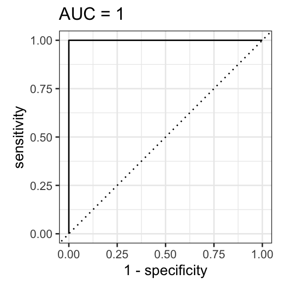
Code
ggsave("healthy_vs_infected_ROC.pdf",width = 3,height = 3)Figure 3. Model still performs perfectly with problematic metabolites removed.
Code
p2 = h_v_i_res2$model_summary_plot
p2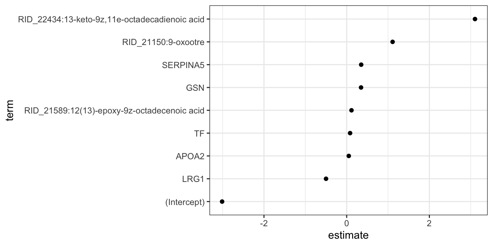
Code
ggsave("healthy_vs_infected_estimates.pdf",p2, height = 3.5, width = 7 )Figure 4. Here we can see the features important to this new model.
E. faecalis vs E. faecium
Now let’s see how well the modeling performs for distinguishing E.faecalis from E.faecium
Code
# Have to discard the healthy data here
model_data <- clinical_metadata_o %>%
merge(all_t, by = "sample_id") %>%
dplyr::filter(condition != "healthy")
outcome = "infection_status"
# Recipe does all of the feature engineering so that we don't have to do anything else to the input data
faecalis_v_faecium_recipe <- recipe(condition ~ ., data = model_data) %>%
update_role(sample_id, new_role = "id") %>%
update_role(infection_status, new_role = "id") %>%
update_role(death_during_admission, new_role = "id") %>% # id role tells the model not to actually incorporate it as a feature
update_role(condition, new_role = "outcome") %>% # specify target
step_dummy(all_nominal_predictors()) %>% # convert string to dummy variables
step_normalize(all_numeric_predictors()) # normalize numeric features
faecalis_v_faecium_res <- our_model(model_data,"condition",faecalis_v_faecium_recipe)Code
p3 = extract_roc(faecalis_v_faecium_res,"condition",".pred_faecalis")
p3 
Code
ggsave("faecalis_v_faecium_ROC.pdf",p3, height= 3, width = 3)Figure 5. Here we can see the ROC curve for the E.facalis vs E.faecium prediction. The model looks like it is performing okay here. This isn’t good enough to be clinically useful really.
Note that a simple model where you assume everyone has E. faecalis gets it right 57% of the time since there are 43 patients with faecalis and only 32 with faecium.
Code
p4 = faecalis_v_faecium_res$model_summary_plot
p4
Code
ggsave("faecalis_vs_faecium_estimates.pdf",p4, height = 3.5, width = 7 )Figure 6. Here we can see the features that are most important to the model. Looks very similar to the previous analysis. Several of these proteins and metabolites are immune related.
Signal we are picking up here is probably that people with faecium infections are more likely to be immmunocompromised (this is already established in the literature.)
Metadata alone model
I am curious how well a model made with just the metadata would perform.
I would expect the MIC testing to do a good job of predicting faecium, as facieum isolates are more likely to be ampicillin and vancomycin resistant.
Code
model_data <- clinical_metadata %>%
filter(condition != "healthy") %>%
# antimicrobial testing was not perfomred for this patient
filter(sample_id != "S18") %>%
#getting rid of uninformative columns. Either very little variance, or too many levels to be useful
select(-pathogen,-patient_id,-pathogen_source,-infection_status,
-bacteremia_recurrence,-race,-death_at_one_year,
-peripheral_vascular_disease,-dementia,-hemiplegia,
-highly_active_antiretroviral_therapy,
-source) %>%
mutate(transplant_type = case_when(transplant_type == "none" ~ "none",
TRUE ~ "transplant")) %>%
select_if(~ !any(is.na(.))) %>%
select(-antibiotic_therapy_before_48_hrs,-antibiotic_therapy_after_48_hrs) %>%
mutate(across(c(history_of_myocardial_infarction,
congestive_heart_failure,
history_of_stroke_or_transient_ischemic_attack,
smoking, copd, peptic_ulcer_disaese,
mod_to_severe_chromic_kidney_disease,
hodgkin_disease, leukemia_or_lymphoma,
icu_admission, mechanical_ventilation,
polymicrobial_bacteremia,
thrombocytopenia_plt_50, hypotension,sensitive_to_vancomycin),
as.factor)) %>%
mutate(wbc = as.numeric(wbc))Warning: There was 1 warning in `mutate()`.
ℹ In argument: `wbc = as.numeric(wbc)`.
Caused by warning:
! NAs introduced by coercionCode
faecalis_v_faecium_m_model_recipe <- recipe(condition ~ ., data = model_data) %>%
update_role(sample_id, new_role = "id") %>%
update_role(death_during_admission, new_role = "id") %>% # id role tells the model not to actually incorporate it as a feature
update_role(condition, new_role = "outcome") %>% # specify target
step_novel() %>%
step_dummy(all_nominal_predictors()) %>% # convert string to dummy variables
step_impute_knn(wbc) %>%
step_normalize(all_numeric_predictors()) # normalize numeric features
condition_metadata_res = our_model(model_data,"condition",
faecalis_v_faecium_m_model_recipe)Warning: ! There are new levels in `solid_tumor`: "FALSE".
ℹ Consider using step_novel() (`?recipes::step_novel()`) \ before
`step_dummy()` to handle unseen values.Warning: ! There are new levels in `solid_tumor`: "FALSE".
ℹ Consider using step_novel() (`?recipes::step_novel()`) \ before
`step_dummy()` to handle unseen values.Code
p5 = extract_roc(condition_metadata_res,"condition",".pred_faecalis")
p5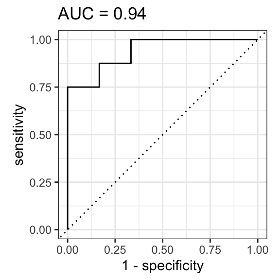
Code
ggsave("faecalis_vs_faecium_md_roc_1.pdf",p5, height = 3, width = 3)Figure 7. The model based on the metadata alone performs well. It actually performs better than our metabolomics/proteomics model.
What features are important?
Code
p6 = condition_metadata_res$model_summary_plot
p6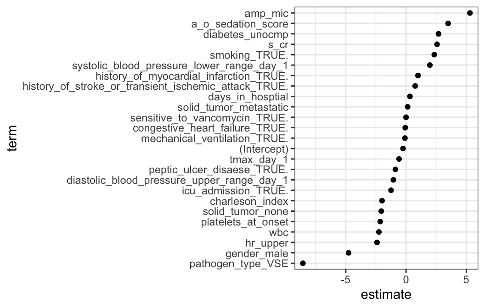
Code
ggsave("faecalis_vs_faecium_md_estimate_1.pdf",p6, height = 3.5, width = 5.5)Figure 8. Here we can see that the model values amp_mic as the most important features.
For all intents and purposes, this is cheating because by the time you perform a MIC, you already know what microbe is underlying the infection.
The whole point of our study was to use methods that would allow you to perform a prediction faster (1-3 days in advance
What if we remove variables that allow you to predict microbe identity (and were captured several days after admittance) from the metadata model?
Code
faecalis_v_faecium_m_model_recipe2 <- recipe(condition ~ ., data = model_data) %>%
update_role(sample_id, new_role = "id") %>%
update_role(death_during_admission, new_role = "id") %>% # id role tells the model not to actually incorporate it as a feature
update_role(condition, new_role = "outcome") %>%# specify target
update_role(pathogen_type,new_role = "id") %>%
update_role(sensitive_to_vancomycin,new_role = "id") %>%
update_role(amp_mic,new_role = "id") %>%
update_role(vanc_mic,new_role = "id") %>%
step_novel() %>%
step_dummy(all_nominal_predictors()) %>% # convert string to dummy variables
step_impute_knn(wbc) %>%
step_normalize(all_numeric_predictors()) # normalize numeric features
condition_metadata_res2 = our_model(model_data,"condition",
faecalis_v_faecium_m_model_recipe2)Warning: ! There are new levels in `solid_tumor`: "FALSE".
ℹ Consider using step_novel() (`?recipes::step_novel()`) \ before
`step_dummy()` to handle unseen values.
! There are new levels in `solid_tumor`: "FALSE".
ℹ Consider using step_novel() (`?recipes::step_novel()`) \ before
`step_dummy()` to handle unseen values.Code
p7 = extract_roc(condition_metadata_res2,"condition",".pred_faecalis")
p7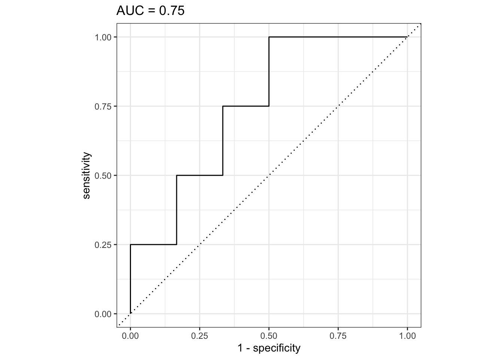
Code
ggsave("faecalis_vs_faecium_md_roc_2.pdf",p7, height = 3, width = 3)Figure 8. When we do this, we find that that model performs slightly worse than our metabolomics/proteomics model, but on the same scale.
Code
p8 = condition_metadata_res2$model_summary_plot
p8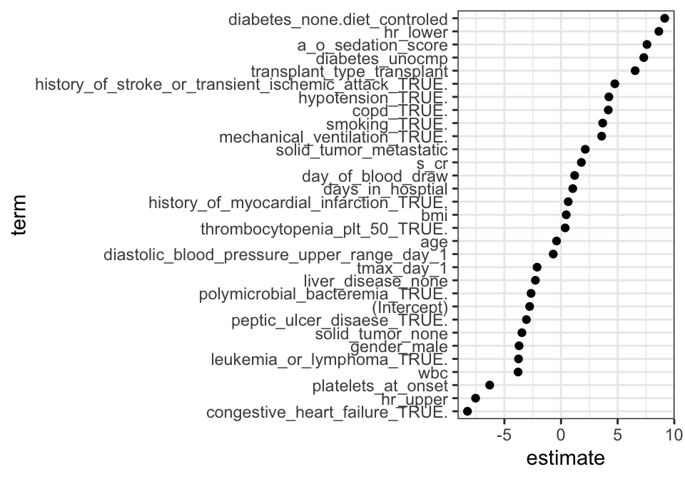
Code
ggsave("faecalis_vs_faecium_md_estimate_2.pdf",p8, height = 3.5, width = 5)Figure 9. When we look into what is driving this model, we see that whether or not the patients had a transplant is a strong predictor.
This is not novel, and highlights how if you are immunocompromised, you are more likely to get a E.faecium infection.
What if we take out transplant type from the model?
Code
faecalis_v_faecium_m_model_recipe3 <- recipe(condition ~ ., data = model_data) %>%
update_role(sample_id, new_role = "id") %>%
update_role(death_during_admission, new_role = "id") %>%
update_role(pathogen_type,new_role = "id") %>%
update_role(sensitive_to_vancomycin,new_role = "id") %>%
update_role(amp_mic,new_role = "id") %>%
update_role(vanc_mic,new_role = "id") %>%
update_role(transplant_type, new_role = "id")%>% # id role tells the model not to actually incorporate it as a feature
update_role(condition, new_role = "outcome") %>% # specify target
step_novel() %>%
step_dummy(all_nominal_predictors()) %>% # convert string to dummy variables
step_impute_knn(wbc) %>%
step_normalize(all_numeric_predictors()) # normalize numeric features
condition_metadata_res3 = our_model(model_data,"condition",
faecalis_v_faecium_m_model_recipe3)Warning: ! There are new levels in `solid_tumor`: "FALSE".
ℹ Consider using step_novel() (`?recipes::step_novel()`) \ before
`step_dummy()` to handle unseen values.
! There are new levels in `solid_tumor`: "FALSE".
ℹ Consider using step_novel() (`?recipes::step_novel()`) \ before
`step_dummy()` to handle unseen values.Code
p9 = extract_roc(condition_metadata_res3,"condition",".pred_faecalis")
p9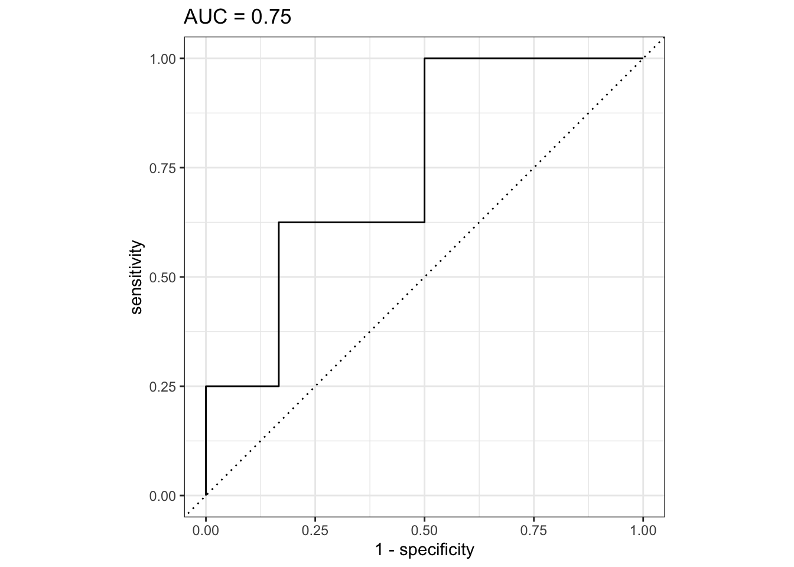
Code
ggsave("faecalis_vs_faecium_md_roc_3.pdf",p9, height = 3, width = 3)Figure 10. Here we can see once all of these variables are taken out, the metadata model is essentially worthless.
All this to say, we did not find any clinical variables that are novel and predictive.
Code
p10 = condition_metadata_res3$model_summary_plot
p10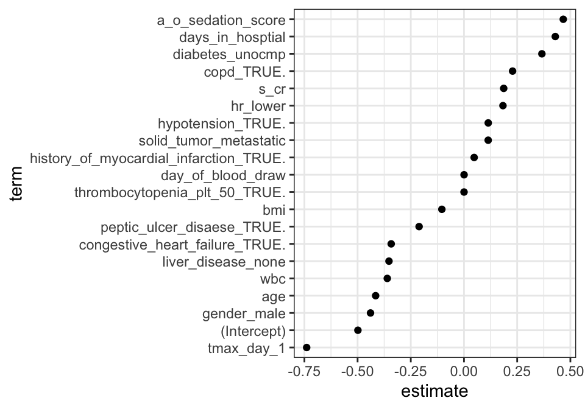
Code
ggsave("faecalis_vs_faecium_md_estimate_3.pdf",p10, height = 3.5, width = 5)Figure 11. Here are the features that are important for the worthless model.
Mortality vs Survival
Now lets see how well we can predict mortality and survival using the proteomics and metabolomics data.
Code
# Have to discard the healthy data here
model_data <- clinical_metadata_o %>%
merge(all_t, by = "sample_id") %>%
dplyr::filter(condition != "healthy") %>%
dplyr::mutate(death_during_admission = as.factor(death_during_admission))
# Recipe does all of the feature engineering so that we don't have to do anything else to the input data
mortality_vs_survival_recipe <- recipe(death_during_admission ~ ., data = model_data) %>%
update_role(sample_id, new_role = "id") %>%
update_role(infection_status, new_role = "id") %>%
update_role(death_during_admission, new_role = "outcome") %>% # id role tells the model not to actually incorporate it as a feature
update_role(condition, new_role = "id") %>% # specify target
step_dummy(all_nominal_predictors()) %>% # convert string to dummy variables
step_normalize(all_numeric_predictors()) # normalize numeric features
mortality_vs_survival_res = our_model(model_data,"death_during_admission",mortality_vs_survival_recipe)Code
p11 = extract_roc(mortality_vs_survival_res,"death_during_admission",".pred_FALSE")
p11 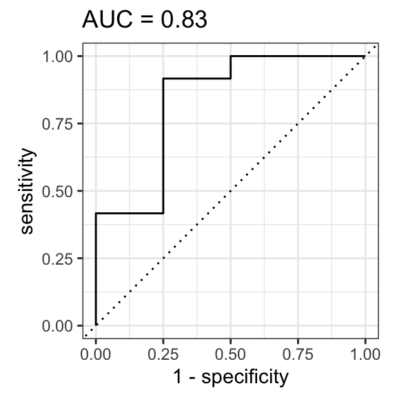
Code
ggsave("mortality_vs_survival_ROC.pdf",p11, height = 3, width = 3)Figure 12. Here is a ROC curve of our model. It looks like it is reasonably accurate, but note that there is a big class imbalance here. A simple model where no patients die would get it right 76% of the time (57/75). Our fancy model is only slightly slightly improved on this. We are really hindered by our ability to only test a total of 3 true positives (due to the small sample size).
Code
p12 = mortality_vs_survival_res$confusion_matrix
p12 Reference
Prediction FALSE TRUE
FALSE 11 1
TRUE 2 2Table 1. Here a confusion matrix highlights this class imbalance.
Code
p13 = mortality_vs_survival_res$model_summary_plot
p13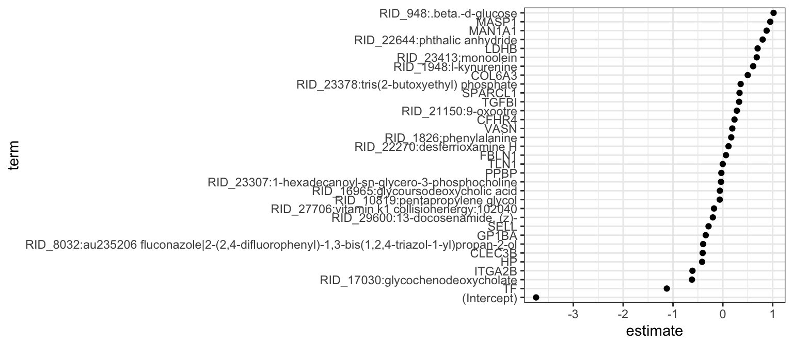
Code
ggsave("mortality_vs_survival_estimate.pdf",p13, height = 3.5, width = 6)Figure 13. Here we can see the features important for the model. Note the size of the intercept.
Metadata alone model
I am curious how well a model made with just the metadata would perform.
Code
model_data <- clinical_metadata %>%
filter(condition != "healthy") %>%
# antimicrobial testing was not perfomred for this patient
filter(sample_id != "S18") %>%
#getting rid of uninformative columns. Either very little variance, or too many levels to be useful
select(-pathogen,-patient_id,-pathogen_source,-infection_status,
-bacteremia_recurrence,-race,-death_at_one_year,
-peripheral_vascular_disease,-dementia,-hemiplegia,
-highly_active_antiretroviral_therapy,
-source) %>%
mutate(transplant_type = case_when(transplant_type == "none" ~ "none",
TRUE ~ "transplant")) %>%
select_if(~ !any(is.na(.))) %>%
select(-antibiotic_therapy_before_48_hrs,-antibiotic_therapy_after_48_hrs) %>%
mutate(across(c(history_of_myocardial_infarction,
congestive_heart_failure,
history_of_stroke_or_transient_ischemic_attack,
smoking, copd, peptic_ulcer_disaese,
mod_to_severe_chromic_kidney_disease,
hodgkin_disease, leukemia_or_lymphoma,
icu_admission, mechanical_ventilation,
polymicrobial_bacteremia,
thrombocytopenia_plt_50, hypotension,sensitive_to_vancomycin,
death_during_admission),
as.factor)) %>%
mutate(wbc = as.numeric(wbc))Warning: There was 1 warning in `mutate()`.
ℹ In argument: `wbc = as.numeric(wbc)`.
Caused by warning:
! NAs introduced by coercionCode
mort_m_model_recipe <- recipe(death_during_admission ~ ., data = model_data) %>%
update_role(sample_id, new_role = "id") %>%
update_role(death_during_admission, new_role = "outcome") %>% # id role tells the model not to actually incorporate it as a feature
#update_role(condition, new_role = "outcome") %>% # specify target
step_dummy(all_nominal_predictors()) %>% # convert string to dummy variables
step_impute_knn(wbc) %>%
step_normalize(all_numeric_predictors()) # normalize numeric features
mort_metadata_res = our_model(model_data,"death_during_admission",
mort_m_model_recipe)
p14 = extract_roc(mort_metadata_res,"death_during_admission",".pred_FALSE")
p14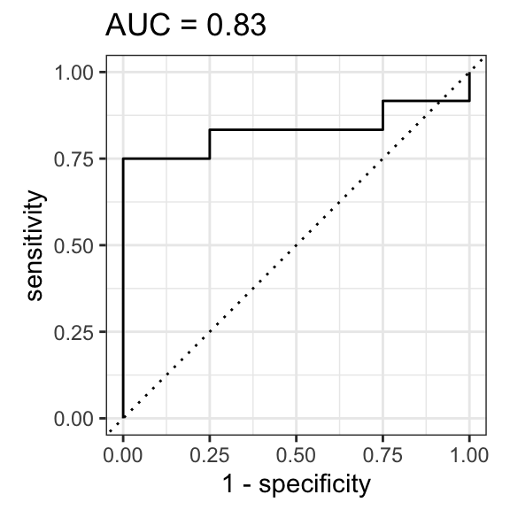
Code
ggsave("mortality_vs_survival_md_roc_1.pdf",p14,height = 3, width = 3)Figure 14. Here we see that the clinical metadata does better job of predicting mortality than oru
What is going on here?
Code
p15 = mort_metadata_res$model_summary_plot
p15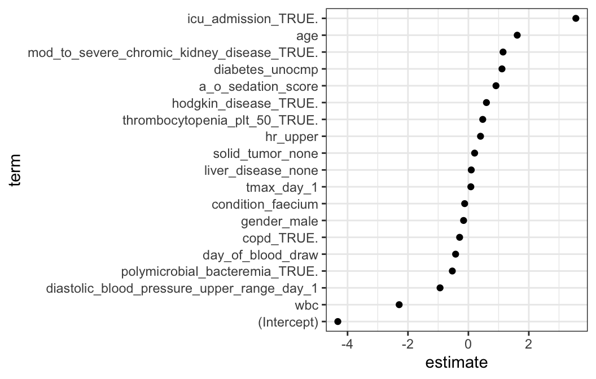
Code
ggsave("mortality_vs_survival_md_estimate_1.pdf",p15, height = 3.5, width = 5.5)**Figure 15.* Turns out if you get admitted to ICU, that predicts mortality pretty well (obviously). Once again, this is kind of cheating, ICU admission is a feature that is only apparent after a patient is at the hospital for some time.
What if we remove this variable from the model?
Code
mort_m_model_recipe <- recipe(death_during_admission ~ ., data = model_data) %>%
update_role(sample_id, new_role = "id") %>%
update_role(death_during_admission, new_role = "outcome") %>% # id role tells the model not to actually incorporate it as a feature
update_role(icu_admission, new_role = "id") %>% # specify target
step_dummy(all_nominal_predictors()) %>% # convert string to dummy variables
step_impute_knn(wbc) %>%
step_normalize(all_numeric_predictors()) # normalize numeric features
mort_metadata_res = our_model(model_data,"death_during_admission",
mort_m_model_recipe)
p16 = extract_roc(mort_metadata_res,"death_during_admission",".pred_FALSE")
p16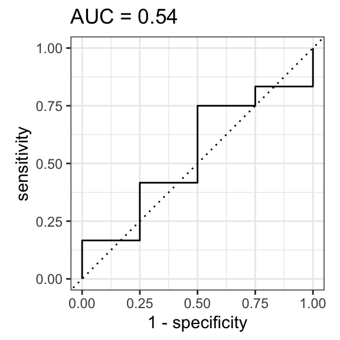
Code
ggsave("mortality_vs_survival_md_roc_2.pdf",p16, height = 3, width = 3)Figure 16. If you take out the ICU admission, you lose all model performance. You actually would be better off just predicting no one dies.
Code
p15 = mort_metadata_res$model_summary_plot
p15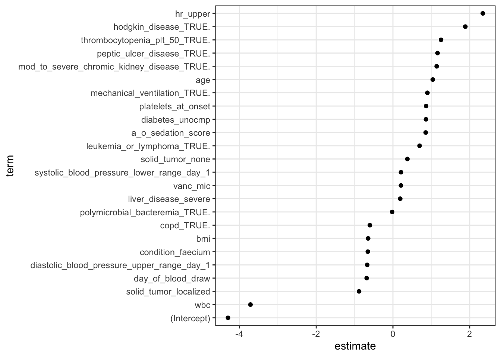
Code
ggsave("mortality_vs_survival_md_estimate_2.pdf",p15, height = 3.5, width = 5.5)Conclusion
The results of the lasso regression models show very similar results/ interpretations to the other form of analysis that we conducted.
These analyses should adress Review 2 comments appropriately,